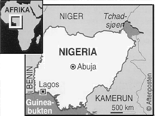

Faktaservice nr. 4 95/96, NOVEMBER 1995
NIGERIA

Areal: 923 768 km
Befolkning: 88,5 millioner (1991)
Største by: Lagos (1,06 mill. innb.)
Eksport: 97,9 prosent av inntektene kommer fra oljen (1992)
Styresett: General Sani Abacha oppløste 18. november 1993 alle organer som var skapt for å forestå overgangen til sivilt demokratisk styre i landet. All politisk aktivitet ble forbud, og all utøvende og lovgivende makt samlet i et utøvende råd (PRC), som består av høyere offiserer.

[Innhold] [Info]
[Aftenposten hjemmeside] [Til Fakta hovedside]